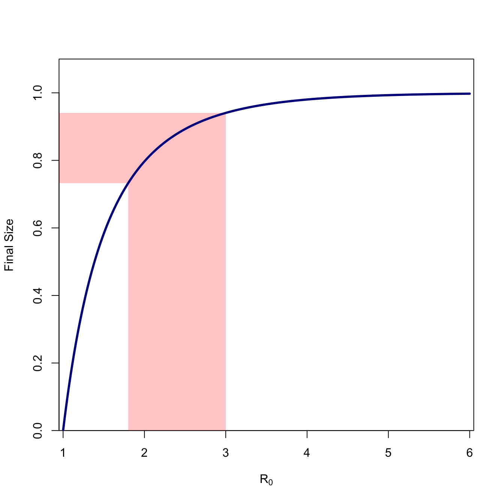
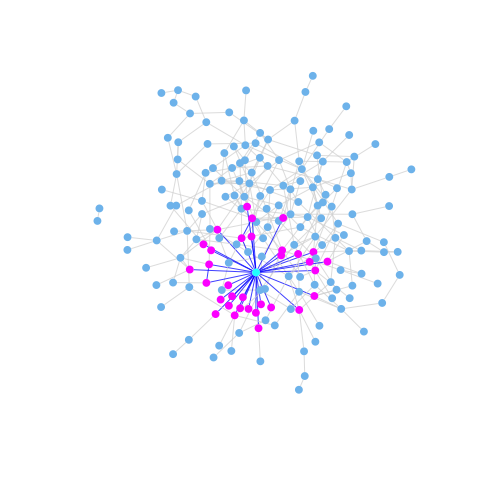
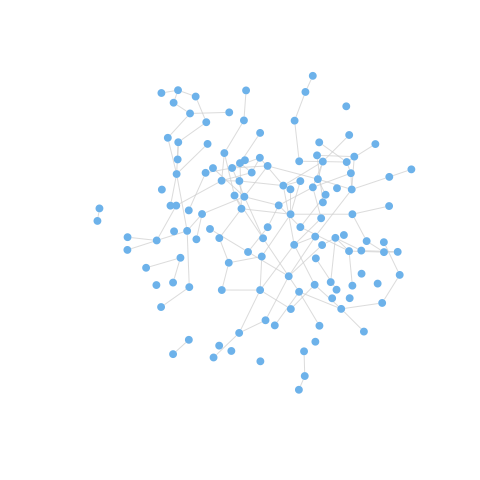
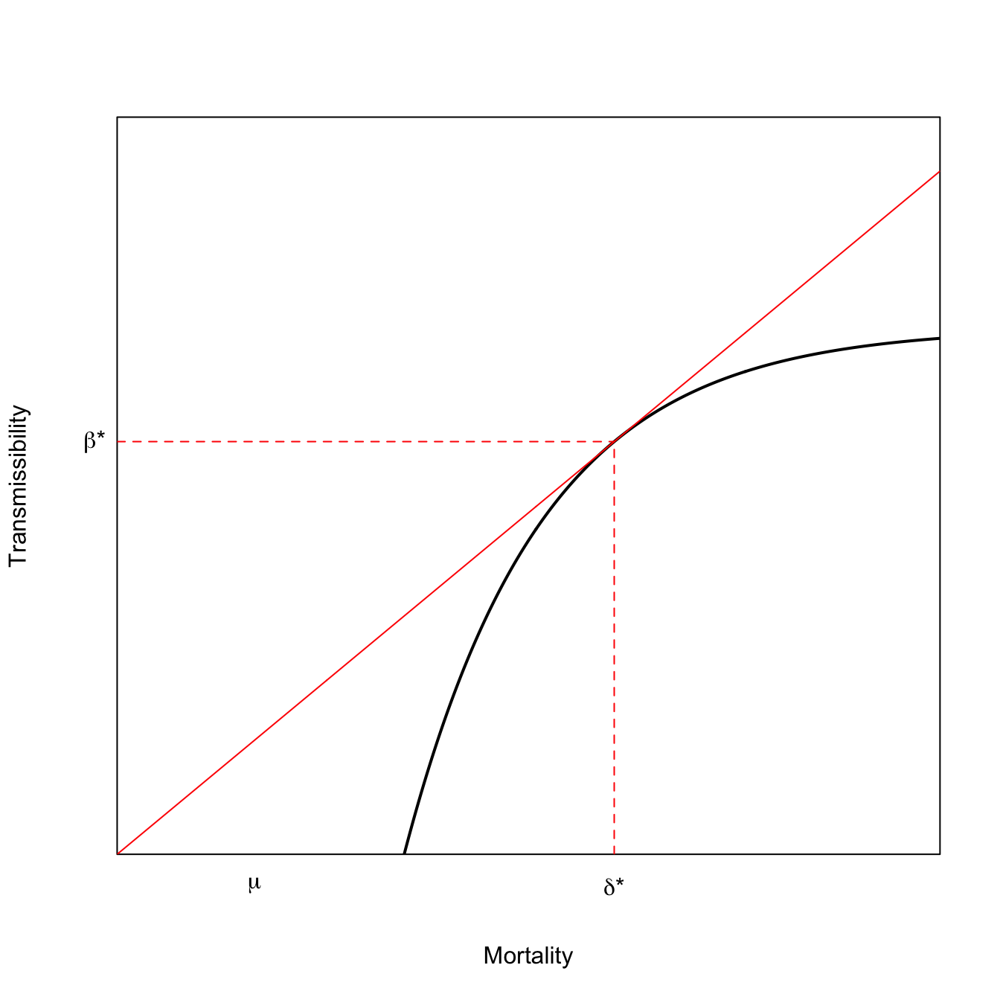
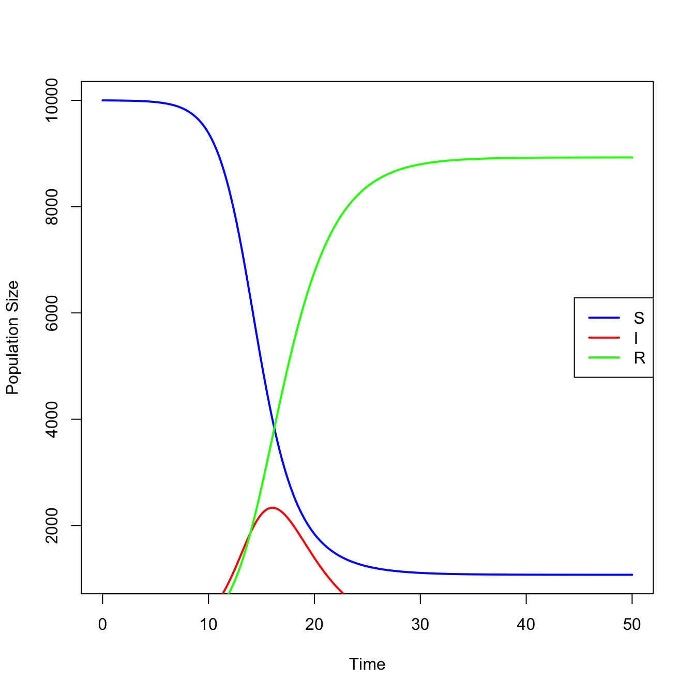
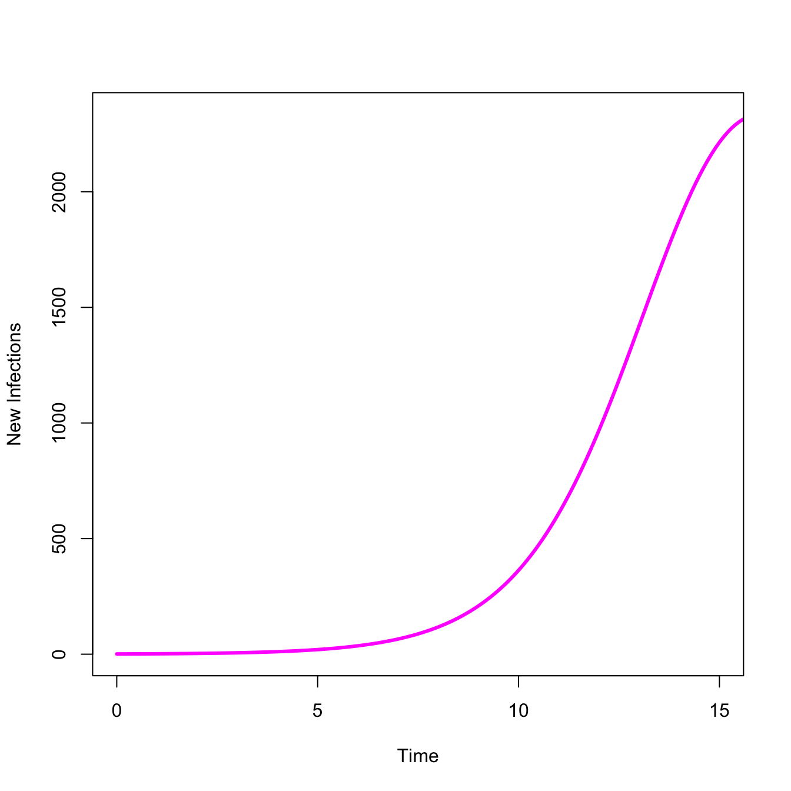
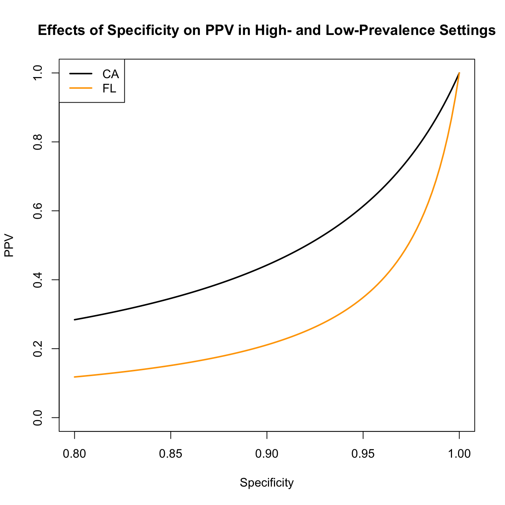

The basic reproduction number, \(R_0\), is defined as the expected number of secondary cases produced by a single (typical) infection in a completely susceptible population. It is important to note that \(R_0\) is a dimensionless number and not a rate, which would have units of \(\mathrm{time}^{-1}\). Some authors incorrectly call \(R_0\) the “basic reproductive rate.”
We can use the fact that \(R_0\) is a dimensionless number to help us in calculating it.
where \(\tau\) is the transmissibility (i.e., probability of infection given contact between a susceptible and infected individual), \(\bar{c}\) is the average rate of contact between susceptible and infected individuals, and \(d\) is the duration of infectiousness.
1.2 The SIR Epidemic Model
It is pretty clear how we calculate \(R_0\) given information on transmissibility, contact rates, and the expected duration of infection. But how do we know that this quantity defines the epidemic threshold of a particular infection? To understand this, we need to formulate an epidemic model. The model we use is called an SIR model, where SIR stands for “Susceptible-Infected-Removed.”
For simplicity, we will deploy several assumptions:
A well-mixed population is one where any infected individual has a probability of contacting any susceptible individual that is reasonably well approximated by the average. This is often the most problematic assumption, but is easily relaxed in more complex models.
In our closed population of \(N\) individuals, say that \(S\) are susceptible, \(I\) infected, and \(R\) are removed. Write \(s=S/N\), \(i=I/N\), \(r=R/N\) to denote the fraction in each compartment.
The SIR model is then:
\[
\begin{aligned}
\frac{ds}{dt} & = -\beta si \\
\frac{di}{dt} & = \beta si - \nu i \\
\frac{dr}{dt} & = \nu i
\end{aligned}
\]
where \(\beta = \tau \bar{c}\) and is known as the effective contact rate, \(\nu\) is the removal rate. By assumption all rates are constant. This means that the expected duration of infection is simply the inverse of the removal rate: \(d = \nu^{-1}\).
What are the conditions for an epidemic? An epidemic occurs if the number of infected individuals increases, i.e., \(di/dt > 0\)
\[ \beta si - \nu i > 0 \]
\[ \frac{\beta si}{\nu} > i \]
At the outset of an epidemic, nearly everyone (except the index case) is susceptible. So we can say that \(s \approx 1\). Substituting \(s=1\), we arrive at the following inequality
\[ \frac{\beta}{\nu} = R_0 > 1 \]
Since \(\beta = \tau \bar{c}\) and \(d = \nu^{-1}\), we see that we have derived our expression for \(R_0\) given in Equation 1.1. This little bit of mathematical trickery explains why we have that cumbersome phrase “in a completely susceptible population” tacked onto our definition for \(R_0\).
1.2.1 Heterogeneous Contact
Epidemiologists who studied gonorrhea infection noted that there was a great deal of behavioral heterogeneity in sexual behavior in populations with endemic infection. Hethcote and Yorke (1984) suggested that partnership heterogeneity might actually permit continued gonorrhea transmission, even when the average population behavior should not support continued infection. Nold (1980) first articulated a mathematical treatment of this phenomenon and R. M. Anderson et al. (1986) derived an analytical relationship for the impact of such behavioral heterogeneity on the basic reproduction number for HIV infection.
Begin again with a population of \(N\) individuals that is divided into \(k\) subgroups, \(N_i\), where \(i\) is the average number of sexual partners per unit time. \(N_i = N p_i\), where \(p_i\) is the proportion of the population in the \(i\)th activity class. We use an SI model, since there is no recovery from HIV infection (at least there wasn’t in 1986).
Assume (and this is a big assumption) that the risk of transmission increases linearly with the average number of partners. Let \(\lambda = \tau I/N\) be the force of infection, where \(\tau\) is the probability of transmission given contact. R. M. Anderson et al. (1986) use \(\beta\) for this probability, but this is confusing given more current usage where \(\beta\) is more conventionally the product of transmissibility and the mean rate of contact between susceptibles and infectious individuals. We therefore use \(\tau\) in the derivation rather than \(\beta\). Thus, the rate of formation of new infections in the \(i\)th activity class is \(i \lambda\). Let \(X_i(t)\) and \(Y_i(t)\) be the number of susceptible and infectious individuals in activity class \(i\) respectively. Our SI model is thus written as:
At the outset of an epidemic, we can assume that approximately everyone in each activity class is susceptible (i.e., \(X_i \approx N_i\)) and the summed force of infection is zero, \(\psi = 0\), since there’s been no epidemic yet! This simplifies Equation 1.5 considerably. Note that, after simplification, the term in the numerator (\(\sum_i i^2 p_i\)) is the expectation of a squared variable, \(E(i^2)\). This is related to variance, which by definition is \(\operatorname{Var}(i) = E(i - E(i))^2 = E(i^2) - E(i)^2\). So \(E(i^2) = E(i) + \operatorname{Var}(i)\). The denominator (\(\sum_i i p_i\)) is the expected (or mean) number of contacts \(E(i)\). Call the variance in contacts \(\sigma^2\) and the mean number of contacts \(\mu\). Noting that \(\beta=\tau \mu\) and defining the coefficient of variation as \(c = \sigma/\mu\), we get the relationship:
where \(\mathcal{R}_0^{(M)}\) is the mean-field solution for \(R_0\).
1.3 Epidemic Thresholds in Structured Populations
1.3.1 Next Generation Matrix: Intuitive Approach
If \(R_0\) is the number of secondary infections produced by a single typical infection in a rarefied population, how do we define it when there are multiple types of infected individuals. For example, what is a typical infection in a vector-borne disease like malaria? What about a sexually transmitted infection where there are large asymmetries in transmissibility (like HIV)? Or what about a multi-host pathogen like influenza?
It turns out that there is a straightforward extension of the theory for structured epidemic models Driessche and Watmough (2002). The mathematics behind this theory is not especially difficult, but it does involve scary German terms that are not familiar to the non-engineers in our midst. The key concept is that we now need to average the expected number of new infections over all possible infected types.
Assume that we have a system in which there are multiple discrete types of infected individuals (e.g., mosquitoes and humans; women and men; or humans, dogs, and chickens). We define the next generation matrix as the square matrix \(\mathbf{G}\) in which the \(ij\)th element of \(\mathbf{G}\), \(g_{ij}\), is the expected number of secondary infections of type \(i\) caused by a single infected individual of type \(j\), again assuming that the population of type \(i\) is entirely susceptible. That is, each element of the matrix \(\mathbf{G}\) is a reproduction number, but one where who infects whom is accounted for.
Once we have \(\mathbf{G}\), we are one step away from \(R_0\). The basic reproduction number is given by the spectral radius of \(\mathbf{G}\). The spectral radius is the also known as the dominant eigenvalue of \(\mathbf{G}\). The next generation matrix has a number of desirable properties from a mathematical standpoint. In particular, it is a non-negative matrix and, as such, it is guaranteed that there will be a single, unique eigenvalue which is positive, real, and strictly greater than all the others. This is \(R_0\).
For illustrative purposes, we will limit our discussion to the case where there are two classes of infected individual. The next generation matrix is thus \(2 \times 2\). For the \(2 \times 2\) matrix, there is a fairly simple formula for the eigenvalues that everyone who took algebra in high school should know. Define
\[ \mathbf{G} = \left[ \begin{array}{cc}
a & b \\
c & d
\end{array} \right]
\]
where \(T=a+d\) is the trace and \(D=ad-bc\) is the determinant of matrix \({\bf G}\).
Say you have a sexually transmitted disease in a completely heterosexual population. Define \(f\) as the expected number of infected women and \(m\) as the expected number of infected men given contact with a single infected member of the opposite sex in a completely susceptible population. The next generation matrix is
\[ \mathbf{G} = \left[ \begin{array}{cc}
0 & f \\
m & 0
\end{array} \right]
\]
\(R_0\) is thus \(\sqrt{mf}\). It is worth noting that this is the geometric mean of the expected number of female and male secondary cases.
When you have more than two discrete types of infectious classes, the formula for calculating the eigenvalues is not as simple, but the same ideas apply. In practice, we typically calculate eigenvalues numerically using software like R.
1.3.2 Next Generation Matrix: More Formal Approach
A review paper by Heffernan, Smith, and Wahl (2005) provides a nice readable introduction for calculating \(R_0\) in structured population models. The notation I use here follows their usage.
Consider the next generation matrix \(\mathbf{G}\). It is comprised of two parts: \(F\) and \(V^{-1}\), where
\[
F = \left[ \frac{\partial F_i(x_0)}{\partial x_j} \right]
\tag{1.8}\]
and
\[
V = \left[ \frac{\partial V_i(x_0)}{\partial x_j} \right]
\tag{1.9}\]
These are square matrices of the partial derivatives of new infections (\(F_i\)) and transfers between different compartments (\(V_i\)). The rank of these matrices is the number of distinct classes of infections. For example, in a simple two-sex SIR model, the next generation matrix would be \(2 \times 2\) since there are two classes of infection (i.e., female and male). \(x_0\) is the disease-free equilibrium state. This matrix should be non-negative, irreducible, and primitive.
\(R_0\) is then the dominant eigenvalue of the matrix \(\mathbf{G}=FV^{-1}\).
Example: SEIR Epidemic Consider a Susceptible-Exposed-Infected-Removed (SEIR) Epidemic. This is an appropriate model for a disease where there is a considerable post-infection incubation period in which the exposed person is not yet infectious.
add SEIR state diagram
The simple SEIR model consists of a set of four differential equations:
\[
\begin{aligned}
\dot{S} & = -\beta S I + \lambda - \mu S \\
\dot{E} & = \beta SI - (\mu + k) E \\
\dot{I} & = kE - (\gamma + \mu) I \\
\dot{R} & = \gamma I - \mu R
\end{aligned}
\]
where \(\beta\) is the effective contact rate, \(\lambda\) is the “birth” rate of susceptibles, \(\mu\) is the mortality rate, \(k\) is the progression rate from exposed (latent) to infected, \(\gamma\) is the removal rate.
Note that in the absence of infection, the equilibrium number of susceptible is \(S^* = \lambda/\mu\).
To calculate the next generation matrix for the SEIR model, we need to enumerate the number of ways that (1) new infections can arise and (2) the number of ways that individuals can move between compartments. There are two disease states but only one way to create new infections. New infections arise through the exposed class. There are only two infection classes \(E\) and \(I\). Our \(F\) matrix collects the partial derivatives of the rate of new infections with respect to changes in the infection classes:
\(R_0\) is the leading eigenvalue of the matrix \(FV^{-1}\). This is reasonably straightforward to calculate since \(FV^{-1}\) is simply a \(2\times2\) matrix.
It is interesting to note that \(R_0\) is also the product of the rate of production of (1) new exposures and (2) new infections, as it should be.
1.4 What is a Generation?
In demography, \(R_0\) represents the ratio of total population size from the start to the end of a generation, which is, roughly, the mean age of childbearing. \(R_0 = e^{rT}\), where \(r\) is the instantaneous rate of increase of the population. So what is a generation in an epidemic model? Generations in epidemic models are the waves of secondary infection that flow from each previous infection. So, the first generation of an epidemic is all the secondary infections that result from infectious contact with the index case, who is of generation zero. If \(\mathcal{R}_i\) denotes the reproduction number of the \(i\)th generation, then \(R_0\) is simply the number of infections generated by the index case, i.e., generation zero. Now, these numbers are typically small and are therefore susceptible to random sampling error. Consequently, we talk about expected (i.e., averaged over many epidemics) numbers of secondary cases produced by generation zero. See Diekmann and Heesterbeek (2000) or Heesterbeek (2002) for a more complete discussion of this topic.
Figure~\(\ref{fig:gen}\) shows a schematic representation of an epidemic. The zeroth generation of the epidemic is the index case – patient zero – indicated in red. The number of secondary infections generated by the case in generation zero is \(R_0=3\). In the first generation (blue), \(\mathcal{R}_1=6/3=2\). The second generation (cyan) has \(\mathcal{R}_1=12/6=2\).
include generations figure
The generation time of an epidemic is typically called the serial interval which we will denote \(V\). Roy M. Anderson and May (1991) show how we can use the serial interval to estimate \(R_0\) at the outset of an outbreak. Assuming constant mortality, they show that
\[
R_0 = 1 + r V,
\tag{1.13}\]
where \(r\) is the exponential rate of increase of infections. Assuming the outbreak started with a small number of infections (e.g., 1), we estimate this simply as \(r=\log(I(t))/t\).
For example, on 26 January 2020, the WHO situation report indicated that there were approximately 2000 COVID-19 cases in China. On the same day, Imperial College epidemiologist Neil Ferguson told the Guardian newspaper that he believed there were already 100,000 infections in China. Based on previous estimates from the 2003 SARS outbreak, the serial interval can be assumed to be 5-7 days. Early epidemic reporting suggest that the spillover event occurred some time around 1 December 2019, meaning that 26 January was 56 days into the epidemic (allowing for a one-day reporting lag). So at a minimum, we can estimate \(R_0 \approx 1 + 5 \times \log(2000) = 1.68\). At the other end, we have \(R_0 \approx 1 + 7 \times \log(100000) = 2.44\). Note that the shorter serial interval, perhaps counter-intuitively, means that \(R_0\) is lower. This is because, for a given epidemic size, the number of infections has taken more generations to get to that size.
1.5 Doubling Time of an Epidemic
\(R_0\) also gives us information about the doubling time of an epidemic. This is a pretty intuitive statistic that can effectively communicate the potential severity of an outbreak. Denote the doubling time of the epidemic \(T_D\), then
\[
T_D = \frac{\log(2) V}{R_0 -1}.
\tag{1.14}\]
An outbreak with \(R_0=2.5\) and a serial interval of \(V=5\) will double every 2.3 days.
We can also calculate the doubling time of an ongoing outbreak from case counts on two different days.
CDC reports that there were 10 confirmed COVID-19 cases in the USA on 21 February 2020 and 41 nine days later on 1 March. This suggests a doubling time of 4.2 days for confirmed cases. Given the almost complete lack of testing at this point in the epidemic, this is probably quite a bit greater than the actual doubling time of actual infections.
1.6 Will An Epidemic Infect Everyone?
Will an epidemic, once it has taken off in a population, eventually infect everyone? In order to answer this question, we want to know how \(i\) changes with respect to the “fuel” for the epidemic, \(s\).
From the SIR formulation, we thus divide equation for \(di/dt\) by the equation \(ds/dt\).
\[ \frac{di}{ds} = -1 + \frac{\nu}{\beta s} \]
We solve this equation by first multiplying both sides by \(ds\)
\[di = (-1 + \frac{\nu}{\beta s})ds \]
We then integrate and do a little algebra, yielding
This is an implicit equation for \(s_{\infty}\), the number of susceptibles at the end of the epidemic. When \(R_0 > 1\), this equation has exactly two roots, only one of which lies in the interval \((0,1)\). %Subtract \(\log(s_{\infty})\) from both sides and we get \(R_0 (s\_{\infty}-1)-\log(s\_{\infty})=0\). Call the whole left-hand side \(y\). \(y\) will have different values for different values of \(\log(s_{\infty})\). Only a couple of those will satisfy Equation 1.16. \(\log(s_{\infty})=0\) (i.e., everyone remains susceptible since there is no epidemic) will always satisfy Equation 1.16 (plug it in and see!). When \(R_0>1\), the other solution is the actual value of the final size. This is the one we really care about. If \(R_0 \leq 1\), the only value that satisfies Equation 1.16 is \(s_{\infty}=1\). In words, at the end of the epidemic, everyone will still be susceptible (i.e., no one gets infected).
This shows a geometric interpretation of Equation 1.16 for various values of \(R_0 > 1\) in black. The point where the line \(R_0 (s_{\infty}-1)\) is tangent to the curve \(\log(s_{\infty})\) indicates the value of \(s_{\infty}\) for a given \(R_0\). As \(R_0\) gets larger, the final size of the epidemic gets larger as well (i.e., the fraction susceptible at the end of the epidemic gets smaller). Figure~\(\ref{fig:final-size}\) also shows the solution when \(R_0 = 1\) in red. The only tangent to the curve \(y=\log(s_{\infty})\) occurs at \(s_{\infty}=1\), meaning that essentially none of the total population becomes infected when an infection is sub-critical.
## final-size curvefs <-function(ro,s) ro*(s-1) -log(s)## s=1 always a solution; want interior onefinal.size <-function(ro){return(1-uniroot(fs,c(0,0.99), ro=ro)$root)}## will give an error if R0=1## redo plotRR <-seq(1.01,6, length=500)ff <-rep(NA,500)for(i in1:500) ff[i] <-final.size(RR[i])## Polygons to indicate range of possible final sizes# verticalrrange <-c(RR[80],RR[80:200],RR[200])fsrange <-c(0,ff[80:200],0)# horizontalfsrange1 <-c(ff[80],ff[80:200],ff[200])rrange1 <-c(0.9,RR[80:200],0.9)plot(c(1,RR), c(0,ff), type="n", xaxs="i", yaxs="i", xlim=c(0.95,6.05), ylim=c(0,1.1),xlab=expression(R[0]), ylab="Final Size")polygon(rrange,fsrange,col=rgb(255,0,0, 60, maxColorValue =255),border=NA)polygon(rrange1,fsrange1,col=rgb(255,0,0, 60, maxColorValue =255),border=NA)lines(c(1,RR), c(0,ff), lwd=3, col="blue4")

This figure plots the final size (\(1-s_{\infty}\)) for values of \(R_0\) ranging from 1-6. We can see that the curve is highly concave and approaches value of the whole population very slowly. We note the final size for \(R_0=2.5\), which is approximately the consensus estimate for the ongoing COVID-19 epidemic. The fraction remaining susceptible at the end of the epidemic is \(s_{\infty}=0.107\), so 89.3% of the population will ultimately become infected (assuming nothing changes).
The conclusion we can draw from all this analysis is that, in general, a fraction of the population will escape infection. That is, \(s_{\infty} > 0\). This is one of the fundamental insights of mathematical theory of epidemics. It is very important to remember that final-size calculation assume that nothing changes in the epidemic. Public-health interventions (e.g., social distancing, quarantine, vaccination) and medical interventions (e.g., curing sick people) will reduce the effective reproduction number (i.e., the expected number of secondary cases produced by a case at some point later in the epidemic). This is indeed the goal of epidemic control!
1.6.1 The Critical Vaccination Threshold and Herd Immunity
Vaccines have both medical and public health utility. The medical utility is that a successfully-vaccinated person is protected from acquiring the disease against which she is vaccinated. The public health utility is that when a sufficiently large share of the population is vaccinated, the potential force of infection falls below the critical threshold for an outbreak. When this happens, the population is said to experience “herd immunity” (Fine 1993).
For an SIR-type epidemic in a well-mixed population, it is trivial to calculate the critical vaccination threshold. The key is to bring the reproduction number below its critical value, i.e., make \(R_0 < 1\). Let \(R\) be the reproduction number of the immunized population and let \(0 \leq p \leq 1\) be the fraction of the population successfully vaccinated. Clearly,
\[ R \leq R_0(1-p). \]
Simply solve for \(R<1\), letting \(p_c\) denote the critical vaccination fraction:
\[
p_c = 1 - \frac{1}{R_0}.
\tag{1.17}\]
1.6.1.1 The Effect of Heterogeneity
Equation 1.17 only applies to well-mixed populations with a single type of infected agent. Heterogeneity changes this. Natural selection arises from the differential fitness of alternate phenotypes. Individuals bearing phenotypes that make them better-suited for their current environments differentially survive and reproduce successfully compared to individuals bearing less well-adapted phenotypes for the environment. Another way of conceptualizing the action of natural selection is due to one of the architects of the New Evolutionary Synthesis, Ernst Mayr, who characterized the action of natural selection as non-random elimination. In this conceptualization, individuals with the least-well-suited phenotypes are eliminated from the population (Mayr 1997) and those remaining do the reproduction. It turns out that this process of non-random elimination, albeit without the reproduction, is common in all sorts of heterogeneous populations. Cohort selection occurs when individuals differentially exit a population based on some (often hidden) phenotype. The hidden heterogeneity that causes differential exit from the population is typically known as frailty. Frailty can have profound impacts on epidemics.
Ferrari et al. (2006) provide an important theoretical discussion of the effects of network frailty on the persistence of epidemics. They note that the behaviorally-heterogenous populations subject to the transmission of an infectious disease can be represented as networks or graphs with a heterogeneous degree distribution. The degree of a vertex in a graph is simply the number of edges that are incident to it, and the degree distribution is just aggregate of the degree of all of a given network’s vertices (essentially, a histogram of degree). In the early phases of an epidemic, individuals who are connected to many others (i.e., have high degree) are more likely to be infected than those with fewer contacts. This means that most-connected individuals are likely to be removed early in an epidemic, either through death or acquired immunity. As the most-connected vertices are differentially removed from the network, the previously strongly-connected network may break apart or otherwise become more sparse, making it easier for the epidemic to fade out (since the effective reproduction number, \(R_i\), will decrease because of markedly lower contact rates). This effect is illustrated in the following two figures. The effect of this frailty is that effective herd immunity may occur at a much lower prevalence than predicted by Equation 1.17.

A heterogeneous network with a high-degree vertex highlighted. Because of its many contacts, this vertex is at risk of infection early in the epidemic.

The graph becomes substantially more sparse with the five most highly-active vertices removed from it. If we continued to remove vertices with high degree, the previously connected graph would become disconnected and an epidemic would no longer be possible.
Network frailty may have been the culprit underlying the famous failure of three high-profile randomized, controlled trials of STD treatment and behavior change interventions to reduce HIV incidence in the East African cities of Mwanza, Tanzania and Rakai and Masaka, Uganda (Orroth et al. 2003).
It is also possible that the effective herd-immunity threshold will be higher than \(p_c\) predicted by Equation 1.17. Salathé and Bonhoeffer (2008) show that when people with similar susceptibilities differentially cluster (a phenomenon known as homophily), the critical herd-immunity threshold can be substantially higher than predicted by Equation 1.17. This turns out to be extremely important for the COVID-19 pandemic experience in the United States (Smaldino and Jones 2021).
1.7 Changing \(R_0\)
For a given small change in the environment, broadly construed, the change in \(R_0\) will be:
For example, one could imagine an increase in temperature having two distinct effects. On the one hand, increased temperature could increase the transmissibility of a pathogen by increasing its replication rate. However, it could also
decrease the contact rate between hosts because of behavioral modulation to avoid heat stress on the part of the hosts. Whether \(R_0\) increases or decreases depends on the particulars of the system. The devil is always in the details in complex systems. If we are to make a sound case for connections between environmental change and EID, we need to be measured and rigorous.
1.7.1 The Fastest Way to Reduce \(R_0\)
We want to bring the effective reproduction number \(R_0\) below one in a multi-host epidemic. Clearly, reducing the number of infections in any cell in the next-generation matrix will reduce \(R_0\), but which will provide the greatest reduction for a given effort? To figure this out, we calculate the sensitivities of \(R_0\) to a change in the various entries of the next-generation matrix. These are the partial derivatives (i.e., the rate of change in \(R_0\) with respect to gij holding everything else constant).
calc.sens <-function(G){ ev <-eigen(G) lmax <-which(Re(ev$values)==max(Re(ev$values))) U <- ev$vectors u <-abs(Re(U[,lmax])) V <-solve(Conj(U)) v <-abs(Re(V[lmax,])) s <- v%o%ureturn(s)}
1.8 Chagas Disease Example
Consider a three-species model introduced by Cohen and Gürtler (2001). The three species included in this household-based model are humans, triatomine bugs, and dogs. Define \(\mathbf{G}\):
where (e.g.) \(g_{B \leftarrow D}\) is the dog-infecting-bug reproduction number.
Cohen and Gürtler (2001) give some data that allow us to estimate the next generation matrix. We fill in the missing parameters with educated guesses (more on this later) and calculate the sensitivities.
G <-matrix( c(0,122.01,7.47, 0.1992,0,0, 0.1992,0,0), nr=3, nc=3, byrow=TRUE)# first, what is R_0?eigen(G)$values
We can see that \(R_0 = 5.08\) and that, by far, the element of \(\mathbf{G}\) with the highest sensitivity is the bug-to-dog entry. Note that the ordering of the eigenvalues in the output actually lists the negative one first. This is why can’t just take the first eigenvalue but need the line in the code to find the dominant eigenvalue (i.e., the one that is positive, real, and strictly greater than all the others).
2 Elasticities
Sensitivities tell us about the absolute change in \(R_0\) given a small change in one of the entries in \(\mathbf{G}\). Sometimes we want to know about the proportional sensitivities though. Use a trick invented by Carl Jacobi in the mid-nineteenth century. Define a proportional sensitivity (or elasticity) as
Elasticities answer the following question: if \(g_{ij}\) increases by 1%, by what percentage will \(R_0\) increase? Elasticities also have the convenient property of summing to one across all elements of the next generation matrix. They thus represent the fraction of the total potential reduction embodied in each cell of the next generation matrix (assuming everything else stays the same).
calc.elas <-function(G){ ev <-eigen(G) lmax <-which(Re(ev$values)==max(Re(ev$values))) R0 <- ev$values[lmax] U <- ev$vectors u <-abs(Re(U[,lmax])) V <-solve(Conj(U)) v <-abs(Re(V[lmax,])) s <- v%o%u e <- s*G/R0return(e)}(E <-calc.elas(G))
Transmission from bugs to dogs and dogs to bugs accounts for more than 94% of the elasticity. Clearly, we need to stop the canine transmission cycle! The elasticities of all pairs (e.g., bugs to dogs/dogs to bugs) are identical because of a feature of elasticities identified by Groenendael et al. (1994). In brief, the sum of elasticities of the incoming transitions to a vertex in the transmission graph will equal the sum of the elasticities of the outgoing transitions. Because humans and dogs don’t infect each other, this means that the elasticities involving bugs and the two mammal species (i.e., humans, dogs) will be equal to each other. More later.
3 Other Structured Epidemic Models
All of the examples so far have involved multi-host infections. There are many important ways that disease transmission is structured within human populations as well. For example, the transmission of respiratory infections like influenza is quite strongly age-structured (Hill and Longini 2003). Indeed, social categories can have a profound impact on the transmission dynamics of epidemics. Kucharski et al. (2014) show that during the 2009 H1N1 Influenza pandemic, infection risk among people in Hong Kong was more influenced by the average reported social mixing behavior of an individual’s age group, than it was by their own reported contacts. For easily-transmitted respiratory pathogens like influenza A, the aggregate patterns can overwhelm the particular behavior of individuals.
We can use sensitivity/elasticity analysis of the next-generation matrix to help us determine the categories of people on whom we should concentrate our epidemic-control efforts if we want to have maximum effect for a given effort.
Hill and Longini (2003) present a next-generation matrix for influenza-A transmission calculated from data presented in Longini, Ackerman, and Elveback (1978):
We can see that, overwhelmingly, the most important task should be controlling transmission between school-age children. This should not be that surprising, given the fact that the entry for the G-matrix for within-school-age transmission is more that three times higher than for any other pairwise value. Note that the elasticity for this transmission is over 19 times higher than any other dyad in the population.
Longini, Ackerman, and Elveback (1978) note that different infections will have different optimal patterns of control and that these depend critically on the age-structure of transmission for the different pathogens.
3.1 Simple Model for Disease with High- and Low-Risk Subpopulations
As we saw in Section 4.1, reducing contacts with the low-risk/high-activity subpopulation is the most effective way to flatten the epidemic curve.
We see that, overwhelmingly, the best epidemic-reduction bang for our public-health buck comes from reducing the contacts within the low-risk population. This means social distancing.
A generalization that emerges from applying this sort of analysis to a range of systems is that the most efficient method for epidemic control is to reduce the number of infections in the the subpopulation that has the most infections. This makes sense: you want to reduce the largest source of potential infections in the population. Examples include:
Reducing transmission among the high-risk segment (e.g., sex workers, injection-drug users), often known as “the core,” for sexually-transmitted infections like gonorrhea (Hethcote and Yorke 1984).
Reducing transmission among school-age children for influenza
Reducing transmission among domestic fowl in bird-flu
Reducing transmission from triatomine bugs to peri-domestic dogs in Chagas disease
3.2 Optimal Virulence: Pathogen Life History Evolution
But enough about you, let’s talk about me for a while. It’s instructive to think about epidemics from the pathogen’s perspective. Pathogens bear biological information in their nucleic acids. This information varies from one copy of a pathogen to another, and the ability of a pathogen to persist and multiply can be a function of this variability. We therefore have fulfilled the necessary and sufficient conditions for natural selection. Pathogens evolve.
We will consider a model in which transmissibility and disease-induced mortality trade-off introduced by Baalen and Sabelis (1995). This interaction is mediated by virulence, which we will take to be proportional to parasite burden or parasitemia. More copies of a virus (say) means that conditional on contact with an infected individual, the pathogen is more likely to be transmitted. However, more viral copies means the host is sicker – and potentially dead. Dead hosts do not transmit and very sick hosts are less likely to be up and interacting with susceptibles.
Consider a directly-transmitted infection from which there is no recovery (e.g., Herpes Simplex Virus). The population experiences a baseline mortality rate, \(\mu\), and a disease-induced mortality \(\delta\).
\[
\begin{aligned}
ds/dt & = -\beta si - \mu s \\
di/dt & = \beta si - (\mu + \delta) i,
\end{aligned}
\]
It is straightforward to show that the basic reproduction number is given by:
The parameter \(\mu\) is independent of the epidemic, but the parameters, \(\beta\) and \(\delta\) can conceivably be functions of virulence, which we denote by \(x\).
An Evolutionary Stable Strategy (ESS) is a phenotype that can not be invaded by a rare mutant. Loosely speaking, it represents the optimal phenotype. The ESS virulence occurs where \(dR_0/dx = 0\).
Differentiate Equation 3.1 with respect to \(x\) using the quotient rule:
This result has a nice geometric interpretation. The ESS virulence occurs where a line rooted at the origin is tangent to the curve that relates \(\beta\) to \(\delta\). This result is known as the Marginal Value Theorem and has applications in economics and ecology as well as epidemiology. The MVT model for optimal virulence is plotted in Equation 3.2. In the lower curve, the tangent line hits further out on the horizontal axis and mortality is higher.
x <-seq(0,30,length=500)# utility function fp> 0 fpp < 0# turns out that RMarkdown does not handle comments with single quotes # fp == deriv of f; fpp == 2nd deriv of ff <-function(x) {0.5-exp(-0.2*(x-7))}# derivative of the utility functionfprime <-function(x) {0.2*exp(-0.2*(x-7))}# f + fp*(z-x) = 0# z = x -(f/fp)# solve for tangency; find the root of thisxinter <-function(x) {return(x -f(x)/fprime(x))}soln <-uniroot(xinter,c(0,40))plot(x,f(x), type="l", lwd=2, xaxs="i", yaxs="i",axes=FALSE,xlab="Mortality",ylab="Transmissibility",ylim=c(0,0.7))axis(1,labels=FALSE,tick=FALSE)axis(2,labels=FALSE,tick=FALSE)box()lines(x,(f(soln$root)/soln$root)*x,col="red")segments(soln$root,0,soln$root,f(soln$root), lty=2, col="red")segments(0,f(soln$root),soln$root,f(soln$root), lty=2, col="red")mtext(expression(paste(delta,"*")),1,at=soln$root, padj=1)mtext(expression(paste(beta,"*")),2,at=f(soln$root),padj=0.5, adj=1.5, las=2)mtext(expression(mu),1,at=5, padj=1)

Frank (1996) has a very thorough review of models of the evolution of virulence.
3.3 The SIR Model
require(deSolve)## define model equationssir <-function(t,x,parms){ S <- x[1] I <- x[2] R <- x[3]with(as.list(parms), { dS <--beta*S*I dI <- beta*S*I - nu*I dR <- nu*I res <-c(dS,dI,dR)list(res) })}## integrateN <-1e4parms <-c(N=N,beta=0.0001, nu =1/2.5)times <-seq(0,50,0.1)x0 <-c(N-1,1,0)stateMatrix <-as.data.frame(lsoda(x0,times,sir,parms))## plotcolnames(stateMatrix) <-c("time","S","I","R")plot(stateMatrix[,"time"], stateMatrix[,"S"], type="l", lwd=2, col="blue",xlab="Time", ylab="Population Size")lines(stateMatrix[,"time"], stateMatrix[,"I"], col="red", lwd=2)lines(stateMatrix[,"time"], stateMatrix[,"R"], col="green", lwd=2)legend("right", c("S","I","R"), col=c("blue","red","green"), lwd=2)

An epidemic means infections are increasing. We can look at just the take-off, where \(dI/dt > 0\)
## Just show the take-offplot(stateMatrix[,"time"], stateMatrix[,"I"], type="l", lwd=3, col="magenta",xlab="Time",ylab="New Infections",xlim=c(0,15))

3.4 Are You Actually Infected?
Suppose you take a COVID-19 rapid test such as a Binax Antigen Self Test. You get back a positive result, indicating that the test was found evidence for SARS-CoV-2 antigens. Do you have COVID-19? We can calculate this probability using Bayes’ Theorem, the rule for updating beliefs in light of new data. The answer may surprise you.
Let’s start with a few definitions. Let \(I\) indicate the presence of infection and \(\sim I\) indicate no infection. The probability of a positive test, given infection is \(P(P|I)\). This probability is known as the true positive rate or the sensitivity of the test. The probability of a positive test given no infection is \(P(P|\sim I)\). This is the false positive rate, which is the complement of the specificity of the test (i.e., \(=1 - \textrm{specificity}\)). Finally, let \(P(I)\) be the probability of infection or the prevalence of infection. In a surveillance setting, we often estimate prevalence using the positivity rate for surveillance testing.
Bayes’ Theorem tells us that the probability of infection, given a positive test is proportional to the sensitivity of the test times the prevalence. If we want to turn this proportionality into a true probability, we need to normalize by the probability of a positive test. In the case of a diagnostic test like this, there are two mutually-exclusive ways that you can get a positive test: it can be a true positive or a false positive. We put this all together and get the following:
A 2020 study by Prince-Guerra and colleagues in MMWR found that the BinaxNow rapid test had a sensitivity of 64.2% and a specificity of nearly 100%. Since it’s not exactly perfectly specific (and certainty has a disproportionate impact on Bayesian calculations), call the specificity 99%. We can write a simple function to calculate the positive predictive value. Suppose that we have a local positivity rate (i.e., prevalence) of 5%.
That actually seems pretty solid. A positive Binax test indicates a 77% chance of infection, given a local prevalence of 5%, even though the sensitivity of the test is pretty low. We get this high probability of infection from such a low-sensitivity test because the specificity is so high. Suppose the specificity was only 95%. Using the same values for sensitivity and prevalence, this would cause our PPV to drop to 0.4032663. A small absolute change in specificity leads to a huge change in the the PPV.
We can also visualize the effect of decreasing specificity on the PPV. According the the Johns Hopkins Coronavirus Resource Center, on 24 December 2021, the state of Florida reported an 11% positivity rate for COVID-19 tests, while the state of California reported a 4% positivity rate.
spec <-seq(1,0.8,,100)plot(spec,ppv(sens=sens,spec=spec,prev=0.11), type="l", lwd=2,ylim=c(0,1), xlab="Specificity", ylab="PPV")lines(spec, ppv(sens=sens,spec=spec,prev=0.04), lwd=2, col="orange")title("Effects of Specificity on PPV in High- and Low-Prevalence Settings")legend("topleft",c("CA","FL"), lwd=2, col=c("black","orange"))

Anderson, R. M., G. F. Medley, R. M. May, and A. M. Johnson. 1986. “A Preliminary Study of the Transmission Dynamics of the Human Immunodeficiency Virus (HIV), the Causative Agent of AIDS.”IMA Journal of Mathematics Applied in Medicine and Biology 3: 229–63. https://doi.org/10.1093/imammb/3.4.229.
Anderson, Roy M., and Robert M. May. 1991. Infectious Diseases of Humans: Dynamics and Control. Oxford: Oxford University Press.
Baalen, M. van, and M. W. Sabelis. 1995. “The Dynamics of Multiple Infection and the Evolution of Virulence.”American Naturalist 146 (6): 881–910. http://www.jstor.org/stable/2463102.
Cohen, J. E., and R. E. Gürtler. 2001. “Modeling Household Transmission of American Trypanosomiasis.”Science 293: 694–98. https://doi.org/10.1126/science.1060638.
Diekmann, O., and H. Heesterbeek. 2000. Mathematical Epidemiology of Infectious Diseases: Model Building, Analysis and Interpretation. New York: Wiley.
Diekmann, O., J. A. P. Heesterbeek, and J. A. J. Metz. 1990. “On the Definition and the Computation of the Basic Reproduction Ratio \(R_0\) in Models for Infectious Diseases in Heterogeneous Populations.”Journal of Mathematical Biology 28 (4): 365–82. https://doi.org/10.1007/BF00178324.
Driessche, P. van den, and James Watmough. 2002. “Reproduction Numbers and Sub-Threshold Endemic Equilibria for Compartmental Models of Disease Transmission.”Mathematical Biosciences 180 (1): 29–48. https://doi.org/10.1016/S0025-5564(02)00108-6.
Ferrari, M. J., S. Bansal, L. A. Meyers, and O. N. Bjornstad. 2006. “Network Frailty and the Geometry of Herd Immunity.”Proceedings of the Royal Society B-Biological Sciences 273 (1602): 2743–48. https://doi.org/10.1098/rspb.2006.3636.
Frank, S. A. 1996. “Models of Parasite Virulence.”Quarterly Review of Biology 71 (1): 37–78. https://doi.org/10.1086/419267.
Groenendael, Jan van, Hans de Kroon, Susan Kalisz, and Shripad Tuljapurkar. 1994. “Loop Analysis: Evaluating Life History Pathways in Population Projection Matrices.”Ecology 75 (8): 2410–15. https://doi.org/10.2307/1940894.
Heesterbeek, J. A. P. 2002. “A Brief History of \(R_0\) and a Recipe for Its Calculation.”Acta Biotheoretica 50 (3): 189–204. https://doi.org/10.1023/A:1016599411804.
Heffernan, J. M., R. J. Smith, and L. M. Wahl. 2005. “Perspectives on the Basic Reproduction Ratio.”Journal of the Royal Society Interface 2: 281–93. https://doi.org/10.1098/rsif.2005.0042.
Hethcote, H. W., and J. A. Yorke. 1984. Gonorrhea: Transmission Dynamics and Control. Vol. 56. Lecture Notes in Biomathematics.
Hill, A. N., and I. M. Longini. 2003. “The Critical Vaccination Fraction for Heterogeneous Epidemic Models.”Mathematical Biosciences 181 (1): 85–106. https://doi.org/10.1016/S0025-5564(02)00129-3.
Kucharski, Adam J., Kin O. Kwok, Vivian W. I. Wei, Benjamin J. Cowling, Jonathan M. Read, Justin Lessler, Derek A. Cummings, and Steven Riley. 2014. “The Contribution of Social Behaviour to the Transmission of Influenza A in a Human Population.”PLOS Pathogens 10 (6): e1004206. https://doi.org/10.1371/journal.ppat.1004206.
Longini, Ira M., Eugene Ackerman, and Lila R. Elveback. 1978. “An Optimization Model for Influenza A Epidemics.”Mathematical Biosciences 38 (1): 141–57. https://doi.org/10.1016/0025-5564(78)90023-8.
Orroth, Kate K, Eline L Korenromp, Richard G White, Awene Gavyole, Ron H Gray, Lawrence Muhangi, Nelson K Sewankambo, et al. 2003. “Higher Risk Behaviour and Rates of Sexually Transmitted Diseases in Mwanza Compared to Uganda May Help Explain HIV Prevention Trial Outcomes.”AIDS 17 (18): 2653–60. https://doi.org/10.1097/00002030-200312050-00013 .
Salathé, Marcel, and Sebastian Bonhoeffer. 2008. “The Effect of Opinion Clustering on Disease Outbreaks.”Journal of the Royal Society Interface 5 (29): 1505–8. https://doi.org/10.1098/rsif.2008.0271.
Smaldino, Paul E., and James Holland Jones. 2021. “Coupled Dynamics of Behaviour and Disease Contagion Among Antagonistic Groups.”Evolutionary Human Sciences 3: e28. https://doi.org/10.1017/ehs.2021.22.